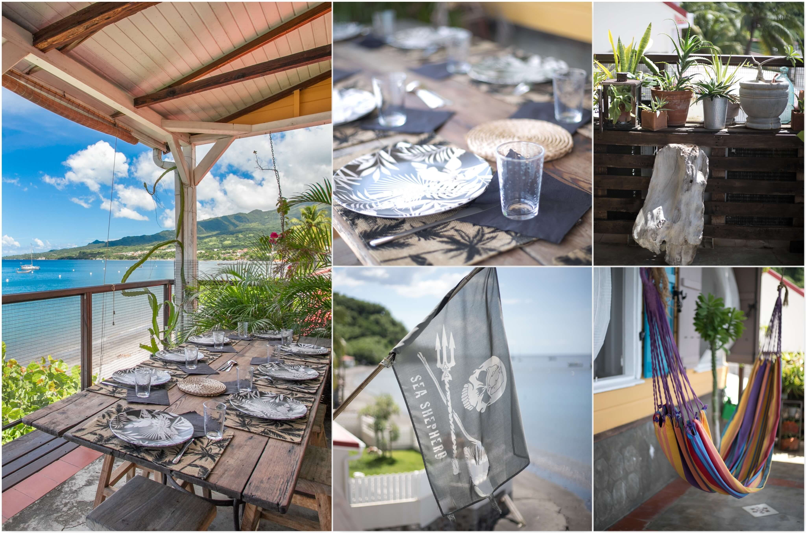
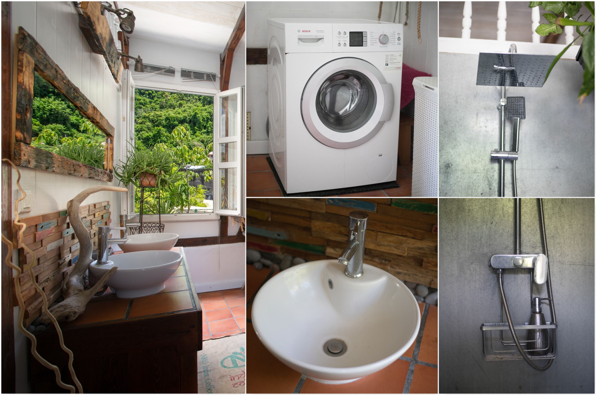
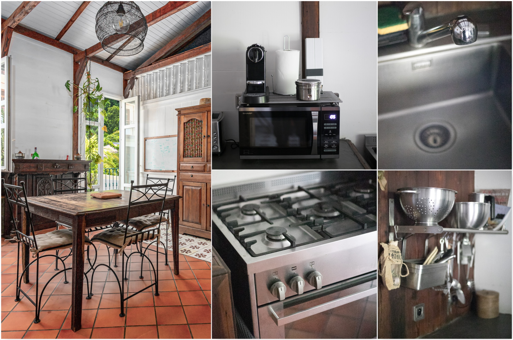
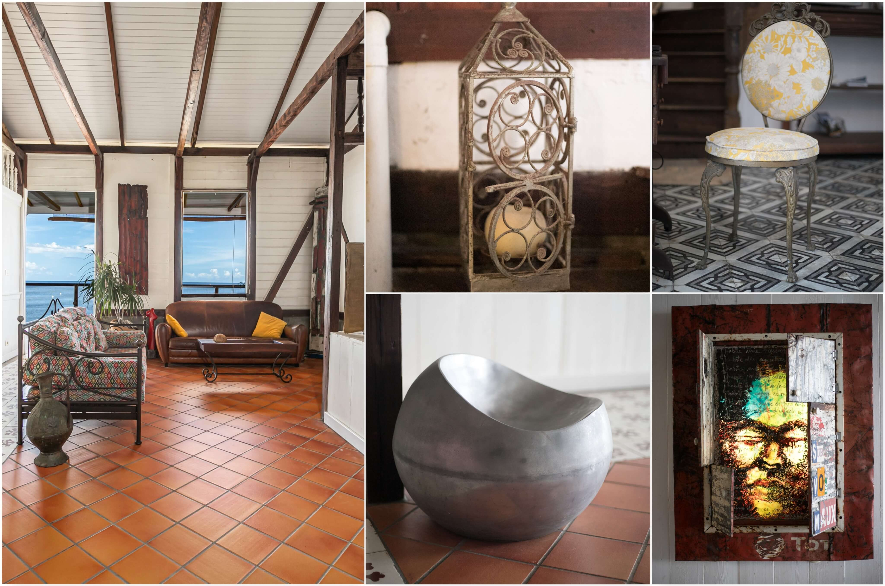
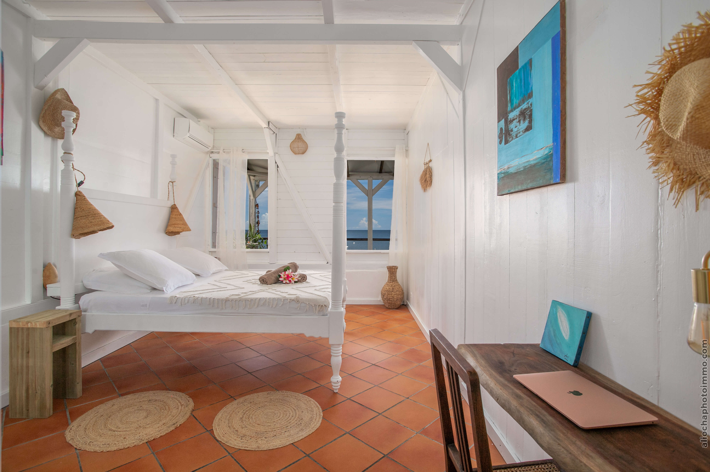
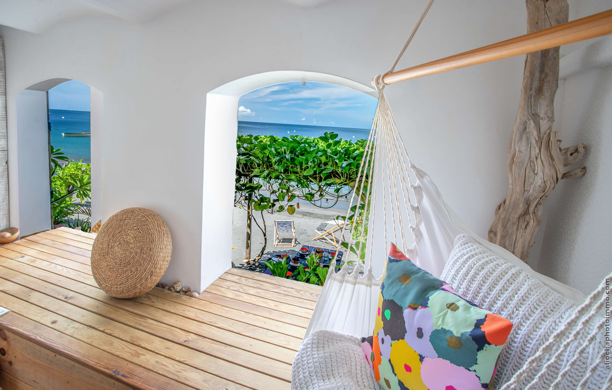
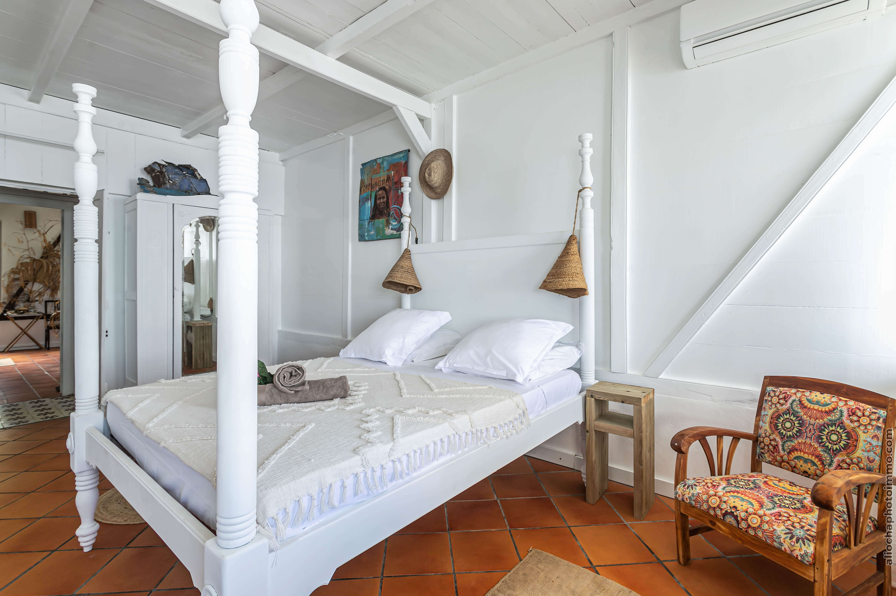
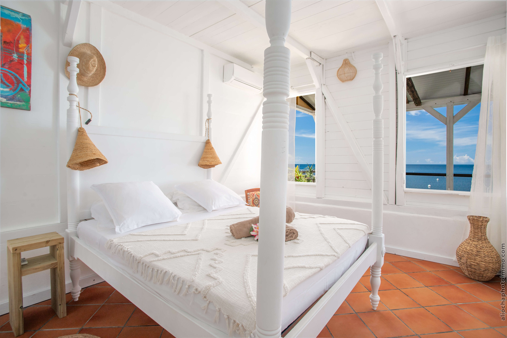
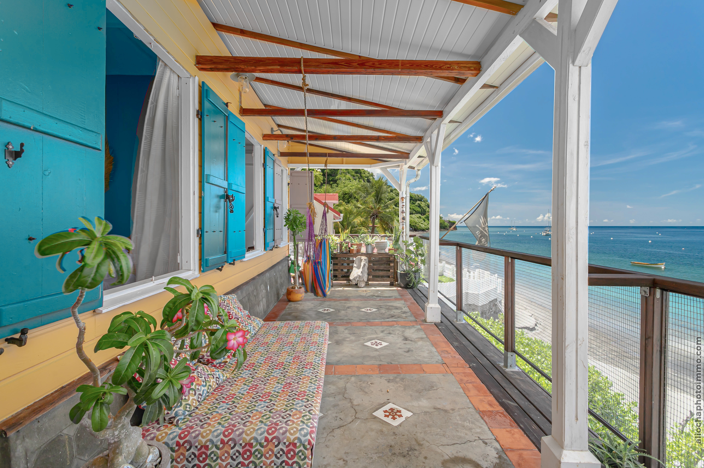
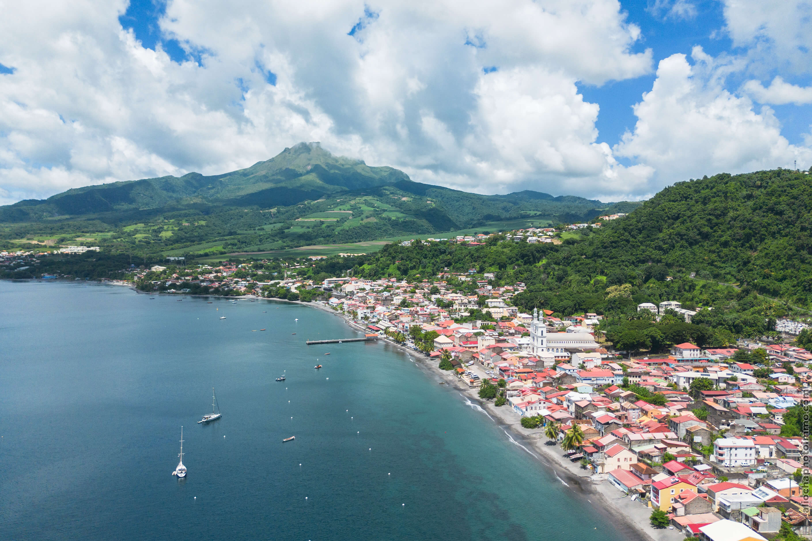

Bienvenue dans notre maison d'Art de vacances, donnant sur la plage de la baie de Saint-Pierre, au pied de la Montagne Pelée.
Reconstruite après l'éruption de 1902, elle allie charme historique et confort moderne. Profitez d'une baignade grâce à l'accès direct à la plage, et de couchers de soleil inoubliables depuis la terrasse.
Ce logement unique vous offre un séjour de détente et d'émerveillement, entre amis ou en famille.
Rez-de-chaussée : Accès direct à la plage pour des moments de quiétude les pieds dans l'eau. Une salle d'eau pratique après la baignade. Table sur le sable pour un brunch avec vue sur les eaux cristallines.
À l'étage : Espace de vie lumineux avec vue sur la mer et la montagne. Cuisine ouverte et salon donnant sur une grande terrasse pour des repas face au coucher de soleil.
Trois chambres climatisées :
Parentale : vue mer et salle de bain privative
Côté montagne : deux lits simples et salle d'eau intégrée
Côté mer : lit double en mezzanine avec vue à couper le souffle

Équipements




Des équipements pensés pour votre confort
La maison peut accueillir jusqu'à 8 personnes et offre tout le confort moderne pour un séjour agréable.
Vous aurez accès à l'entièreté du logement hormis une pièce de rangement au rez-de-chaussée. Les entrées et sorties peuvent se faire en toute autonomie avec notre boîte à clé.
Idéalement placés pour explorer le Nord Caraïbes :
Commerces à pied (supérette à 5 min)
Musées et clubs de plongée de Saint-Pierre à quelques pas
Plages sauvages de sable noir à 20 min (Anse Céron, Anse Couleuvre)
Toboggans du Carbet à 15 min
Montagne Pelée à 20 min (départ depuis Morne Rouge)
La maison en images





4,92/5
Note des voyageurs
100%
Taux de satisfaction
40+
Clients accueillis
13
Avis 5 étoiles
Contact
Pour toute question sur notre logement, nos équipements, ou pour réserver votre séjour, contactez-nous !
Via ce formulaire, nous sommes à votre disposition pour vous accompagner et répondre à vos besoins.
Avis clients
Ce que nos voyageurs disent de leur séjour
★★★★★
Dominique
Maison extraordinaire : cadre magnifique sur la plage, propre et très bien équipée (vaisselle, serviettes…). Benjamin a été de bons conseils, très arrangeant sur les horaires et réactif. L'endroit fait rêver et est conforme aux photos. Top !!
Novembre 2024
★★★★★
Laurent
Maison les pieds dans l'eau. La maison correspond parfaitement à l'annonce. La décoration créée est de bon goût. Les équipements sont de qualité. Benjamin est un hôte très réactif et très à l'écoute. Je recommande +++ J'espère revenir dans cette maison.
Octobre 2024
★★★★★
Yves
Très bon logement pour découvrir le nord de l'île. La baie de St Pierre est somptueuse et nous avons apprécié les soirées barbecue sur la plage. Les chambres sont bien climatisées et le séjour/cuisine est très agréable. Un accueil aux p'tits oignons !
Août 2024
Questions fréquentes
Saint-Pierre se trouve à environ 50 km au nord de Fort-de-France, soit 45 à 60 min en voiture via la N2 (côte Caraïbe). La location d'une voiture est recommandée pour profiter pleinement du nord de l'île. Des navettes maritimes (vedettes) relient également Fort-de-France à Saint-Pierre en 30 min selon la saison.
Oui, un espace de stationnement est disponible devant la maison pour accueillir votre véhicule. Saint-Pierre est une ville tranquille où le stationnement en bord de mer est facile et gratuit.
La maison dispose d'un accès direct à la plage depuis le rez-de-chaussée — littéralement les pieds dans l'eau. Aucune route à traverser : vous posez votre serviette à quelques mètres de la porte.
La maison peut accueillir jusqu'à 8 personnes grâce à ses trois chambres climatisées : une chambre parentale avec salle de bain privative et vue mer, une chambre côté montagne avec deux lits simples, et une mezzanine côté mer avec lit double.